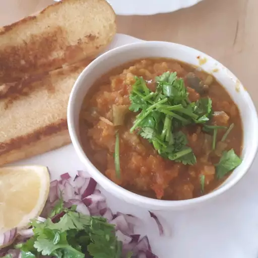

Home
Pav Bhaji

Description
Pav Bhaji is a popular Indian street food dish made with a spicy vegetable mash served with buttered bread rolls. It's a delicious and filling meal that is loved by people of all ages.
How to make Pav Bhaji
Making Pav Bhaji is a fun and rewarding experience. Below is a detailed ingredient list and step-by-step instructions to help you create this mouthwatering dish:
Pav Bhaji Ingredients
- Mixed vegetables (potatoes, peas, carrots, bell peppers)
- Onion
- Tomato
- Ginger-garlic paste
- Pav Bhaji masala
- Butter
- Cilantro (coriander leaves)
- Lemon
- Pav (bread rolls)
- Salt to taste
- Green chilies (optional)
- Oil
Pav Bhaji Instructions
- Boil the mixed vegetables until soft and mash them together.
- In a pan, heat oil and butter, then sauté chopped onions until golden brown.
- Add ginger-garlic paste and chopped tomatoes, cooking until the tomatoes are soft.
- Add the mashed vegetables, Pav Bhaji masala, and salt. Mix well and cook for a few minutes.
- Garnish with chopped cilantro and a squeeze of lemon juice.
- In another pan, toast the Pav rolls with butter until golden brown.
- Serve the Bhaji hot with toasted Pav, chopped onions, and lemon wedges on the side.
Pav Bhaji Tips
- Use fresh vegetables for the best flavor.
- Adjust the spice level according to your preference.
- Serve with a dollop of butter on top for extra richness.
- Pair with a side of crispy papad or bhaji for added crunch.
Pav Bhaji Variations
- Cheese Pav Bhaji: Add grated cheese on top of the Bhaji before serving.
- Paneer Pav Bhaji: Mix in crumbled paneer for a protein boost.
- Spicy Pav Bhaji: Increase the number of green chilies for a spicier version.
Pav Bhaji Serving Suggestions
- Serve with a side of crispy potato chips or bhaji.
- Pair with a refreshing drink like lemonade or buttermilk.
- Enjoy with a side of pickles and yogurt for added flavor.
Pav Bhaji Nutritional Information
One serving of Pav Bhaji (without Pav) contains approximately:
- Calories: 250
- Protein: 6g
- Carbohydrates: 40g
- Fat: 10g
- Fiber: 8g
Pav Bhaji Storage
Store leftover Pav Bhaji in an airtight container in the refrigerator for up to 2-3 days. Reheat on the stovetop or microwave before serving. The Pav can be stored separately and toasted fresh when ready to eat.
Pav Bhaji Conclusion
Pav Bhaji is a delightful and satisfying dish that brings the flavors of Indian street food to your home. With its spicy vegetable mash and buttery bread rolls, it's a meal that everyone will love. Enjoy making and sharing this delicious recipe!